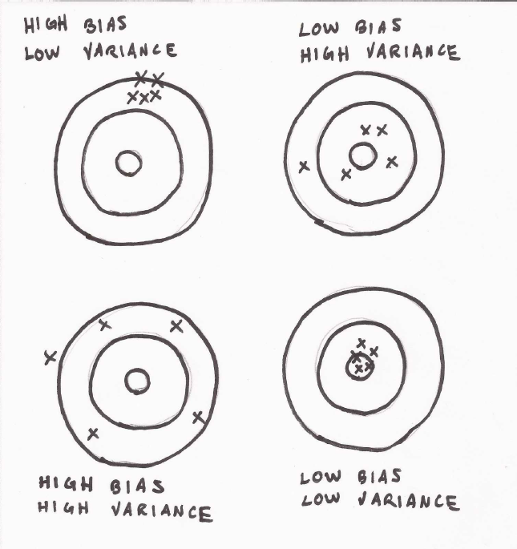

-
Install scikit-learn
scikit-learn is based on numpy and scipy. they can be installed separately. installation has no dependency.
pip3.6 install scikit-learn
pip3.6 install numpy
pip3.6 install scipy
>> import sklearn
>> sklearn.__version__
-
Defining Machine Learning
machine learning = learn from data in the past; guide next move in the future
task = T; performance measure = P; experience = E
if a program's performance at task T, as measured by P, improves with experience E
we say the program learn from experience E
-
Learning from experience
supervised learning and unsupervised learning
supervised learning = program predicts output for an input by learning pairs of labeled inputs and outputs
unsupervised learning = program does not learn from labeled data, instead it attempts to discover patterns in data
semi-supervised learning = something in between, something both
reinforcement learning = closer to supervised learning. do not learn from labeled pairs. receive feedback for decisions
we give another name for input and output (supervised):
input = features (the phenomena that inputs represent = explanatory variables)
output = response variable (there can be many names, regressands..measured variables..labels....)
collection of examples that comprise supervised experience = training set
collection of examples used to assess performance = test set
-
Machine learning tasks
two most common supervised machine learning tasks = classification and regression
classification task = program must learn to predict discrete values for one or more response variables from one or more features
(predict the most probable category, e.g. deciding whether a news article belongs to the politics or leisure sections, requires supervised learning)
regression task = program must predict the values of one more or continuous response variables from one or more features
(e.g. predicting the sales revenue for a new product, requires supervised learning)
a common unsupervised learning task = clustering = discover groups of related observations, called clusters
another unsupervised task = dimensionality reduction = process of discovering features that account for the greatest changes in response variable.
-
Training data, testing data and validation data
training set = collection of observations = experiences to be learned
test set = used to evaluate performance of the program
test set should not be included in training set, otherwise it will be difficult to assess whether the program
has learned to generalize from the training set or has simply memorized it.
memorized training set = overfitting
reduce overfitting = regularization
validation / hold-out set = tune variables called hyperparameters that control how program learn from training set
complete observations => training set (~75%) + test set (~25%) + validation set (~?%)
-
Bias and variance
measuring performance !
two fundamental causes of prediction error: a model's bias, and its variance
A model with high bias will produce similar errors for an input regardless of the training set it used to learn
A model with high variance, conversely, will produce different errors for an input depending on the training set that it used to learn

-
introducing scikit-learn
C comments
-
Free Form Source Code
there
-
Identifiers
default
-
Program Style
sloppy
-
Program Style